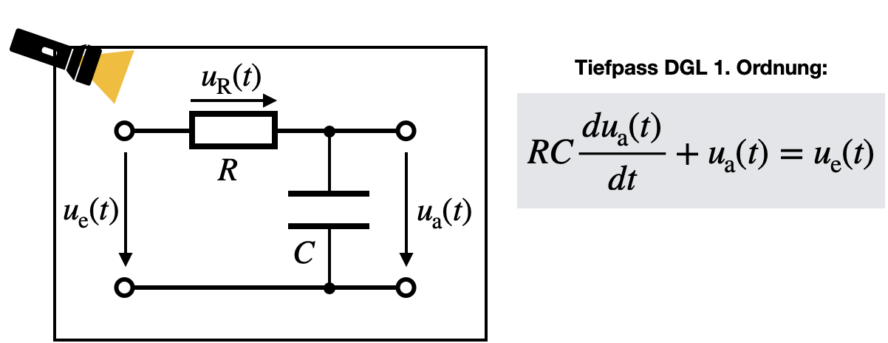

Differentialgleichung
Contents
Differentialgleichung#
Mit dem white box-Verfahren lösen wir das System-Identifizierungsproblem indem wir genau analysieren, aus welchen Komponenten unser System besteht. Anhand eines Tiefpasses 1. Ordnung wollen wir uns die Vorgehensweise einmal ansehen.
Aufstellen der Differentialgleichung#
In diesem Falle gucken wir in unser System rein. Wir sehen die elektronische Schaltung bestehend aus einer Reihenschaltung von Widerstand mit Wert \(R\) und Kondensator mit Kapazität \(C\). Am Eingang liegt die Spannung \(u_e(t)\) an. Über \(C\) kann die Ausgangsspannung \(u_a(t)\) gemessen werden. Der Strom, mit dem der Kodensator aufgeladen ist bekanntlich
wobei \(u_a(t)\) im allgemeinen die Spannung ist, die am Kondensator anfällt und in diesem Falle gleich der Ausgangsspannung ist.
Außerdem gilt \(i_R(t) = i_C(t)\). Damit können wir die Spannung, die über den Widerstand \(R\) abfällt, wie folgt schreiben:
Aus der Maschenregel, hier \( u_a(t) + u_R(t) = u_e(t)\) folgt nach Einsetzen von \(u_R(t)\) folgendes:
Dies ist eine Differentialgleichung (DGL) 1. Ordnung. Die Differentialgleichung erkannt man daran, dass auch eine zeitliche Ableitung der Ausgangsgröße (also ein Differential) in der Formel auftritt. Da allerdings nur die 1. zeitliche Ableitung auftritt, handelt es sich um eine DGL 1. Ordnung. Würde Ausgangs oder Eingangsgröße zweimal zeitliche abgeleitet werden, würde es sich um eine DGL 2. Ordnung handeln usw.
Systeme 1. Ordnung beschreiben Energiespeicher, also z.B. Temperaturmesser, die warm werden, oder auch Operationsverstärker, Kapazitäten und Elektromagneten. Im Prinzip ist jedes System, was sich erwärmt, ein Energiespeicher und wird somit ein System 1. Ordnung sein. Systeme 2. Ordnung haben einen zusätzlichen Dämpfungsterm. In diesen Systeme findet auch eine Umlagerung von Energien statt, wie es z.B. in einem LC-Schwingkreis passiert. Kondensator und Spule tauschen ständig Energien aus, wodurch es zu einer periodischen Schwingung kommt. Dieses System wir durch eine DGL 2. Ordnung beschrieben.

Lösen der Differentialgleichung#
Ziel ist es jetzt, eine Funktion für Eingangs- und Ausgangsspannung zu finden, die diese Gleichung erfüllt. Hierfür geht man im Allgemeinen in 5 Schritten vor. Wie werden später in diesem Kapitel noch sehen, dass DGL im Frequenz- bzw. Laplaceraum viel einfacher gelöst werden können als wir es hier, im Zeitraum, jetzt machen.
1. Homogener Ansatz: Unter homogenen Ansatz verstehen wir das Eingangssignal auf Null zu setzen: \(u_e(t) = 0\). Das heißt das System wird nicht belastet. Die DGL vereinfacht sich zu
und kann umgeformt werden zu
Das bedeutet, wird suchen eine Funktion für \(u_a(t)\) die nach der Zeit abgeleitet wieder sie selber ist. Eine Exponentialfunktion erfüllt genau diese Bedingung und wir nutzen sie für unseren homogenen Ansatz:
mit den Konstanten \(K\) und \(\gamma\). Dies wird in die homogene DGL eingesetzt und es folgt:
Daraus folgt für die erste Konstante
2. Spezieller Ansatz für Anfangsbedingung: Jetzt legen wir statt Null einen Sprung an den Eingang \(u_e(t)\) an: \(u_e(t) = u_0\) für \(t = 0\). Für lange Zeiten wird sich der Kondensator komplett aufgeladen haben, sodass der Ausgang ein konstantes Signal liefert. Das heißt unsere Lösung für ein spezielles Eingangssignal ist
3. Allgemeiner Ansatz: Nun kann der allgemeine Ansatz formuliert werden. Diese ist einfach die Addition von homogener und spezieller Ansatz:
4. Konstante bestimmen: Eine Konstante war schon bestimmt, nämlich \(\gamma = \frac{1}{RC} := \frac{1}{\tau}\). Diese Zeitkonstante wurde bereits in den allgemeinen Ansatz unter 3. eingefügt. Um \(K\) zu bestimmen, setzen wir unsere Anfangsbedingung von Schritt 2. ein: Zum Zeitpunkt \(t=0\) ist das System zwar am Eingang mit \(u_0\) belastet, der Ausgang ist jedoch noch Null, solange der Kondensator nicht vollständig aufgeladen ist. Wir setzen also \(t=0\), \(u_e(t=0) = u_0\) und \(u_a(t = 0) = 0\) in den allgemein Ansatz ein:
5. Lösung hinschreiben: Für die Lösung setzen wir alle unsere bestimmten Konstanten in den allgemeinen Ansatz ein und erhalten:
Dies ist auch die sogenannte Sprungantwort eines Systems 1. Ordnung, da wir in Schritt 2. einen Sprung angelegt haben. Hätten wir uns als Eingangssignal einen Impuls (eine Delta-Funktion) ausgesucht, hätten wir die Impulsantwort des Systems bestimmt.